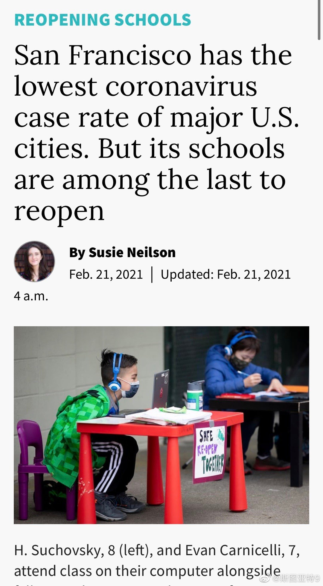

《经济学人》一篇文章讨论为什么中国的疫苗接种进度不行（是不是真不行也搞不清）。文章认为只要原因是疫苗产能还是提不上去——对任何国家大量生产灭活疫苗都很困难，另一个原因是中国觉得不着急，反正没有什么病毒。

斯图亚特9
2021-02-21


斯图亚特9
2021-02-21
上次听到有人鄙视使用水果刀削苹果的。硕想不通怎么有人会不用削皮刀用水果刀。感觉中枪了。大家都是这么想的？
斯图亚特9
2021-02-21
旧金山纪事报发问：为什么旧金山的确诊率是主要城市里最低的，开放学校却是最晚的？答案是教师工会势力大？
- 